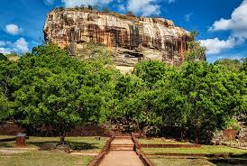
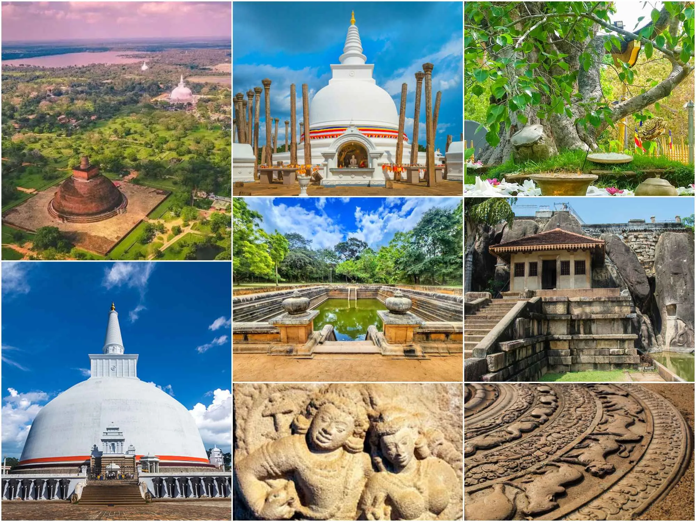
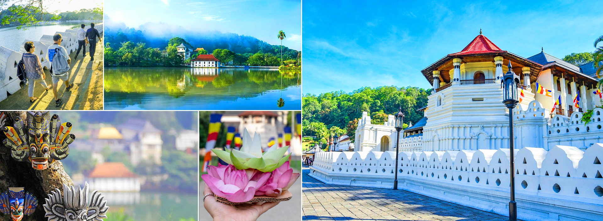
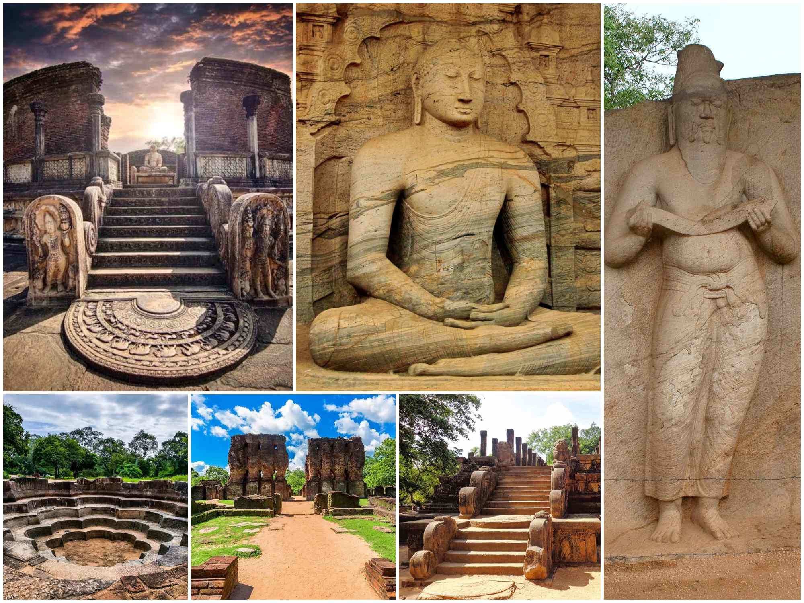

Destinations
Sigiriya

Sigiriya (Lion Rock) is a ancient palace and rock fortress located in the central part of Sri Lanka. Built by King Kashyapa in the 5th century AD, it is a UNESCO World Heritage Site and one of the most iconic landmarks in the country.
Key Highlights
- The Summit & Palace:
Reaching the top requires climbing approximately 1200 steps. At the appex, you'll find the ruins of the King's royal palace, swimming pools, and sweeping panoramic views.
- The Frescoes & Mirror Wall:
Mid-way up the rock, a spiral staircase leads to a gallery of ancient frescoes and the famous Mirror Wall.
- The Lion Gate:
The entrance to the site is marked by a massive stone lion, which serves as a symbol of the kingdom's power and grandeur.
- Water Gardens:
The site also features beautifully landscaped gardens with pools and fountains, providing a serene environment for visitors.
Anuradhapura

Anuradhapura is an ancient city and UNESCO World Heritage Site in Sri Lanka, known for its well-preserved ruins and rich Buddhist heritage. The site features numerous temples, stupas, and historical structures that showcase the architectural and cultural achievements of the ancient kingdom.
Key Highlights
- Jaya Sri Maha Bodhi:
Believed to be the oldest historically authenticated tree in the world, grown from a cutting of the sacred fig tree under which the Buddha attained enlightenment.
- Ruwanwelisaya Stupa:
One of the world's tallest ancient stupas, showcasing impressive architecture and historical significance.
- Jethavanarama Stupa:
Once the third tallest structure in the ancient world and a marvel of ancient brick construction.
- Abhayagiri Stupa:
A massive monastic complex that was once one of the largest Buddhist institutions in the world.
Kandy

Kandy is a city in the Central Province of Sri Lanka, known for its rich cultural heritage and as the last capital of the ancient Kingdom of Kandy. The site is home to several historical temples and cultural landmarks, showcasing the unique traditions and architecture of the region.
Key Highlights
- The Temple of the Sacred Tooth:
This temple is one of the most important Buddhist sites in Sri Lanka, housing the relic of the Buddha's tooth.
- The Kandy Market:
A bustling market where visitors can experience local culture, shop for handicrafts, and taste authentic Sri Lankan cuisine.
- The Royal Botanical Gardens:
These gardens house an extensive collection of tropical plants and are a popular destination for nature lovers.
- The Kandy Lake:
A serene lake surrounded by lush greenery, offering a peaceful retreat for visitors and a habitat for various bird species.
Galle Fort

Galle Fort is a UNESCO World Heritage Site located in the city of Galle, Sri Lanka. Built by the Portuguese in the 16th century and later expanded by the Dutch, it is one of the best-preserved European fortifications in Asia. The fort features a unique blend of military architecture and colonial history, offering visitors a glimpse into Sri Lanka's fascinating past.
Key Highlights
- Ramparts & Bastions:
The fort's walls and bastions provide stunning views of the Indian Ocean and the city of Galle.
- Galle Lighthouse:
A historic lighthouse located within the fort, offering panoramic views of the surrounding area.
- Galle National Museum:
A museum showcasing the history and culture of the region, including artifacts from the fort's colonial past.
Polonnaruwa

Polonnaruwa is an ancient city and UNESCO World Heritage Site in Sri Lanka, known for its well-preserved ruins and historical significance. The site features a variety of structures, including palaces, temples, and statues, showcasing the architectural and cultural achievements of the ancient kingdom.
Key Highlights
- Gal Vihara:
A rock temple featuring four large Buddha statues carved into a granite rock face, showcasing exquisite craftsmanship and religious significance.
- Royal Palace:
The remains of the royal palace complex, including the audience hall and other structures, provide insight into the grandeur of the ancient kingdom.
- Parakrama Samudra:
A vast reservoir built by King Parakramabahu I, showcasing the advanced engineering skills of the ancient civilization.
- Vatadage:
A circular relic house with intricate stone carvings, believed to have housed sacred relics.